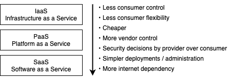

Cloud computing
- Cloud computing = On-demand access to IT capabilities
- Before cloud computing
- Everything was stored and processed locally (on-premises)
- Centralized, secluded and segmented
- Now third party (cloud provider) stores the data.
NIST definition of cloud computing
- 🤗 See also NIST definition of cloud computing
Essential characteristics
- On-demand self-service
- Consumers can unilaterally provision computing capabilities
- E.g. computing power, storage, network
- Does not require human interaction
- Broad network access
- Capabilities are available and accessible over the network.
- Via wide variety of platforms e.g. laptops, mobile phones and PDAs
- Resource pooling
- Uses multi-tenant model to provide resources pooled to serve multiple consumers
- The instances (tenants) are logically isolated, but physically integrated.
- One or multiple instances of one or multiple applications operate in a shared environment.
- Assigns different physical and virtual resources dynamically
- Location is abstracted to e.g. country, state or data-center
- Exact location is unknown to user
- Rapid elasticity
- Feeling of "infinite" and instant scalability
- Usually automatically
- Measured service
- Metering capability in an abstracting way e.g. storage, processing, bandwidth, active user accounts.
- Resource usage can be monitored, controlled, and reported
Cloud computing service models
Infrastructure as a services (IaaS)
- Capability for consumers to provision processing, storage, networks, and other fundamental computing resources
- Aims to give most control over the provided hardware that runs applications
- E.g. operating systems, storage, and networking components
- E.g. virtual machines (EC2 in Amazon), virtual networks.
Platform as a Service (PaaS)
- Provides capability for consumers to deploy onto managed cloud infrastructure
- Allows consumer to use programming languages, SDKs, services, and tools supported by the provider
- Consumer does not control or manage underlying cloud infrastructure
- But can control deployed applications and configurations for the hosting environment
- Provides an environment for building, testing, and deploying software applications
- Can add features such authentication.
- Aims to help creating an application quickly without managing the underlying infrastructure.
- E.g. development tools, config management, and deployment platforms
Software as a Service (SaaS)
- Software that is centrally hosted and managed for the end customer.
- User does not control underlying cloud architecture
- E.g. network, servers, OS, storage etc.
- Can only control limited user-specific application configurations.
IaaS vs PaaS vs SaaS

Identity-as-a-Service (IDaaS)
- Managed authentication services
- Services include e.g. • Single-Sign-On (SSO) • Multi-Factor-Authentication (MFA) • Identity Governance and Administration (IGA) • Access management • Intelligence collection
Security-as-a-Service (SECaaS)
- Integrates security services into corporate infrastructure
- Services include e.g. • penetration testing • authentication • intrusion detection • anti-malware • security and incident management.
- E.g. McAfee Cloud Security
Container-as-a-Service (CaaS)
- Container and cluster services
- Services include e.g. • virtualized container engines • easier container and cluster management
- Inherits features of IaaS and PaaS
- See also container security
Function-as-a-Service (FaaS)
- Provides a platform allowing to develop, run, and manage functionalities without any infrastructure effort.
- E.g. AWS Lambda, Google Cloud Functions, Azure Functions
Separation of duties
- Cloud computing is the ultimate in separation of duties
- E.g.
- The data owner is the entity accountable for the data itself
- Data custodian is the entity responsible for access to the data
- When a single individual becomes both the data owner and the data custodian, security issues can arise.
- Also a countermeasure for insider attacks and social engineering attacks.
Shared responsibility
- On-premises: you manage everything.
- IaaS: provider manages virtualization, servers, storage and networking
- PaaS: provider additionally manages OS, middleware and runtime
- SaaS: provider manages everything
Cloud Deployment Models
Private cloud
- Provisioned for exclusive use of single organization
- May be owned/managed/operated by the organization, third party or combination
- May be on or off premises
Public cloud
- No local hardware to manage or keep up-to-date, everything runs on your cloud provider's hardware.
- Services are rendered over a network
- Provisioned for open use by the general public
- May be owned/managed/operated by a business, academic, government or combination.
- Exists on the premises of the cloud provider.
Community Cloud
- Shared infrastructure between several organizations with shared concerns (e.g. compliance)
- Not open to public
- May be owned/managed/operated by the organization, third party or combination
- May be on or off premises
Hybrid cloud
- Composition of two or more cloud (private, community or public)
- Infrastructures remain unique entities
- but are bound by a technology allowing data and application portability.
Multi cloud
- Multi-cloud is a environment where an organization leverages two or more cloud computing platforms to perform various tasks
- Increases capabilities with combined offering
- Limits data loss and downtime to a greater extent.
- Management products include • Azure Arc • Google Anthos • AWS Outposts
Pros and cons of cloud computing
Advantages of cloud computing
- Economical: Less infrastructure cost, less cost of ownership, fewer capital expenses
- Operational: cost efficient, elastic, quick provisioning, automatic updates, backup and recovery...
- Staffing: Less staff is required, less personal training
- Security: Patch application and updates, less cost on security configurations, better disaster recovery, audit and monitoring on providers side, better management of security systems.
- Innovation: Quick access to innovation
Disadvantages of cloud computing
- Organizations have limited control and flexibility
- Prone to outages and other technical issues
- Security, privacy, and compliance issues
- Contracts and lock-ins
- Depends on network connections
- Can be hard to migrate from one to another
Cloud regulations
- FedRAMP: US regulatory effort regarding cloud computing
- PCI DSS: Deals with debit and credit cards, but also has a cloud SIG
NIST Cloud Computing Reference Architecture
- High-level conceptual reference architecture
- Full document
Cloud actors
- Cloud Consumer
- User of the cloud products and services
- Cloud Provider
- Delivers cloud computing based products and services
- Cloud Auditor
- Can conduct independent assessment of cloud services
- Cloud Broker
- Manages the use, performance and delivery of cloud services
- Negotiates relationships between providers and consumers
- Service categories
- Service Intermediation: Improves value of a cloud service/function
- Service Aggregation: Combining multiple services to a new one
- Service Arbitrage: Like aggregation but services can be chosen from different vendors.
- Cloud Carrier
- Provides connectivity and transport of cloud services from providers to consumers.
Service Level Agreement (SLA)
- Span across the cloud and are offered by service providers
- Service-level agreement (SLA) is a commitment between a service provider and a client